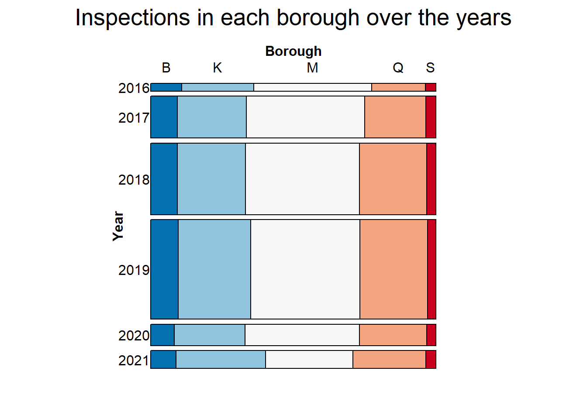
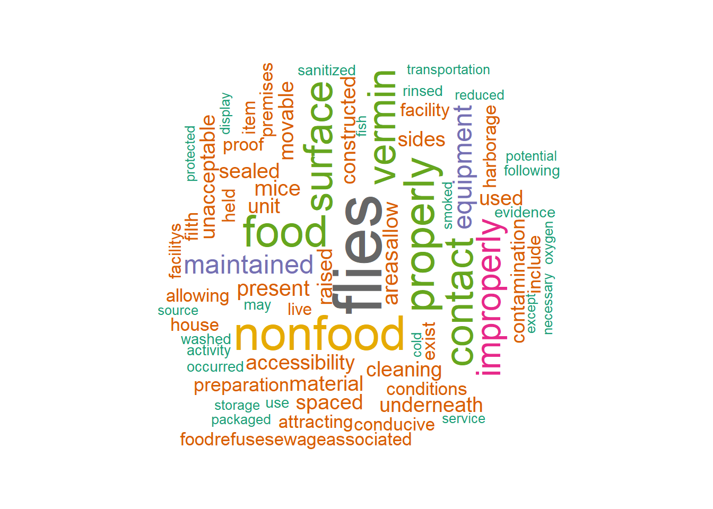
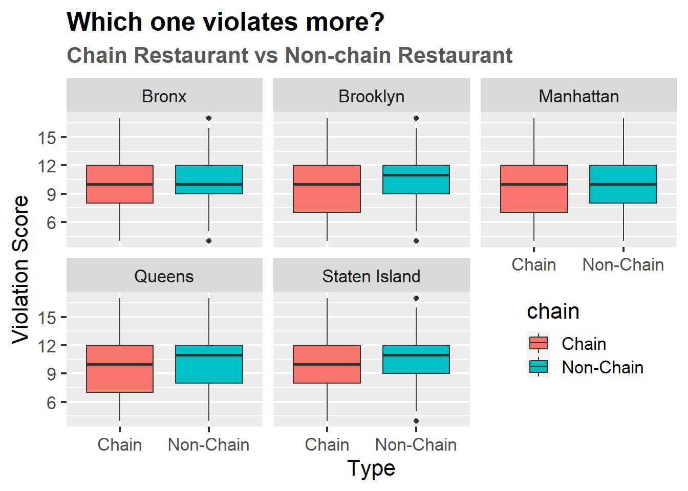
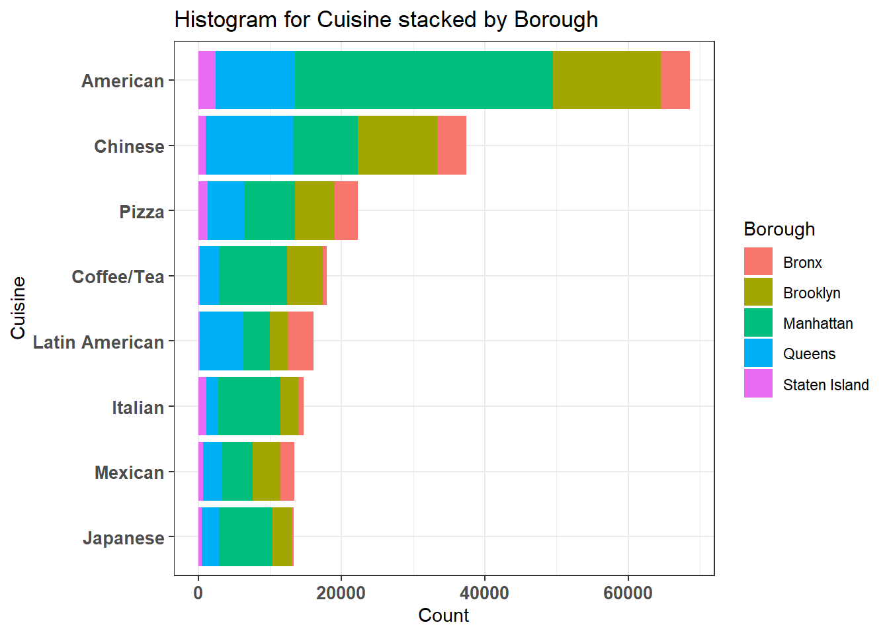
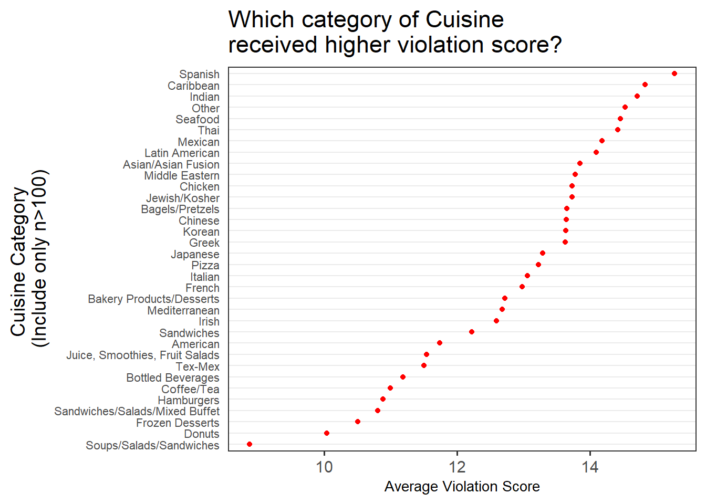

Chapter 5 Results
After exploring and cleaning the dataset, finally we can start analyzing the inspection results and help public make informed decisions! In this Results chapter, we will answer various questions about violation and safety of New York City Restaurants.
5.1 Total Inspections in New York City
We can see that 2019 recorded the most number of inspections. We see a sudden drop in inspections post that, which could be attributed to the spread of Covid-19. Most frequently carried out inspections are the initial ones followed by re-inspections.
5.2 Consistency of Inspections
We can see that inspections were carried out on a consistent basis till the start of 2020. The number of inspections carried out during the weekdays were roughly the same. We see a sharp drop after the start of 2020. This was roughly the time of Covid onset. We see things are healing back to normal towards the mid of 2021.
5.3 Inspections in New York City - Borough Level

Manhattan seems to have the majority of inspections in any given year. We can also see that most inspections were carried out in 2019. However, the proportion of inspections carried out in each borough remains roughly the same every year. This could mean that out of all the inspections which are to be carried out in a given year, the New York government has fixed ratios for each borough. For example, it seems like it is never the case that for a particular year Staten Island will be given more attention than Manhattan.
We see that the proportion of inspections carried out varies immensely by the boroughs, however, they are carried out on a consistent basis. We again see a sharp drop similar to one of the above plots.
5.4 Frequent Violations
We can see that Brooklyn, Manhattan and Queens account for the majority of these violations and have roughly the same share. This makes sense because most of the inspections are also carried out in these boroughs. More number of violations in a borough need not necessarily mean the place is unsafe, instead, it means that regular checks are in place to ensure safety. We will confirm this below.
5.5 Sentiment Analysis
In order to understand the sentiment behind these violations, we analyse the word cloud for the most frequent words that occur in their violation description.

We can see that the sentiment displayed by these violation codes is mostly against the hygiene and safety standards of the restaurants.
5.6 Borough - Grade - Flag - Three Way Analysis
We can see that the most frequently awarded grade after an inspection is grade A and Manhattan has the majority share of it. The share of critical flags in each of these boroughs is roughly around 50%, that is, for each of these boroughs, the outcome of an inspection is equi-likely to be either critical or non-critical, however, the most likely grade is A. This tells us that flag is not really dependent on grade. It is possible for a restaurant to have committed a critical violation but overall they have maintained high standards and received grade A.
5.7 Relationship Between Score and Grade
Here, we can see a strong relation between score and grade. Restaurants with inspections score between 0-13 received grade A, followed by B grade for score in 14-27 and grade C for score greater than 27. This means that score is inversely proportional to safety standards and hygiene.
5.8 Chain vs Non-Chain
5.8.1 Frequent Offenders - By Critical Violations

We can see that among the chain restaurants, Dunkin is by has the most critical violations. It has roughly the same number of outlets in the boroughs excluding Staten Island.
Let’s solve other interesting question this time. Which one do you think is safer, a chain restaurant or a non-chain restaurant?

The results were somewhat surprising. Before checking the box plot, note that the higher the violation score is, the more serious the violation is. So the higher violation score means that restaurant is less safe. As a result, non-chain restaurants tended to have higher violation score than chain restaurants in all regions! Presumably, chain restaurants with integrated management pay a bit more attention to hygiene or storage of food. If you want to have a hygienic meal in New York City, you are more likely to have what you want to by going to a chain restaurant.
5.9 Favourite Cuisine

We see that ‘American’ cuisine is by the most favorite in New York City. We also see that Manhattan has the majority proportions of almost all the top cuisines, making itself more attractive to New Yorkers by offering diversity.
Now we investigate if the violation score differ depending on the type of restaurant?

We can easily check this out through the Cleveland Dot Plot. To avoid errors due to a small number of samples, only categories with more than 100 samples were selected. A distinct difference is observed than expected. Because each category of cuisine has a different way of cooking and handling ingredients, there must be restaurants that are exposed to environments that are prone to violation. The graph above clearly shows that.
If then, we also want to know that the proportion of cuisine in each grade affected by borough. We will create a mosaic plot (which is basically a faceted stacked bar chart) showing all three variables.
We chose top 5 category of cuisine to secure enough sample size. Clearly, you can see that the proportion of cuisine in each grade varies for each borough. Especially, if you want to eat chinese, I recommend not to eat in Bronx borough because a lot portion of grade C Chinese restaurant is there!
5.10 Score Change over Time
Now, let’s take a look at how the violation score of restaurants changes over time.
A few interesting things can be noticed in the graph. Note that one line in the graph represents the score change of one restaurant over time. First of all, it can be ascertained that serious violations are immediately remedied. In the graph, the violations over score 40 are improved right after the inspection. In addition, when looking at the overall trend of lower scores, it is estimated that restaurants are making some effort to improve safety.
5.11 After COVID-19
we cannot leave out the analysis about COVID-19. Which violation increases after COVID-19 do you think?
It seems that there is a period between 2020-2021 where the inspection was not conducted due to the corona virus. To see what kinds of violations increased when the inspection was resumed, a trend line was drawn on the scatter plot above. The clearly increasing violation item is code 08A which indicates ‘Facility not vermin proof. Harborage or conditions conducive to attracting vermin to the premises and/or allowing vermin to exist.’ according to the description table. Due to the long shutdown period, the facilities that prevent vermin are not being managed well.